一致性Hash算法在分布式中普遍使用，那么它到底是何方神圣呢？为何会用到它呢？与其他的算法如取模相比有何优势？在使用的过程中有何问题，又怎么解决？下面来一步步揭开它的神秘面纱。注：本篇博客相当于转载，中间加了一些理解，原地址为：https://blog.csdn.net/bntX2jSQfEHy7/article/details/79549368
redis一致性哈希算法
一致性哈希算法在1997年由麻省理工学院提出的一种分布式哈希（DHT）实现算法，设计目标是为了解决因特网中的热点(Hot spot)问题，初衷和CARP十分类似。一致性哈希修正了CARP使用的简 单哈希算法带来的问题，使得分布式哈希（DHT）可以在P2P环境中真正得到应用。
一致性hash算法提出了在动态变化的Cache环境中，判定哈希算法好坏的四个定义：
- 1、平衡性(Balance)：平衡性是指哈希的结果能够尽可能分布到所有的缓冲中去，这样可以使得所有的缓冲空间都得到利用。很多哈希算法都能够满足这一条件。
- 2、单调性(Monotonicity)：单调性是指如果已经有一些内容通过哈希分派到了相应的缓冲中，又有新的缓冲加入到系统中。哈希的结果应能够保证原有已分配的内容可以被映射到原有的或者新的缓冲中去，而不会被映射到旧的缓冲集合中的其他缓冲区。
- 3、分散性(Spread)：在分布式环境中，终端有可能看不到所有的缓冲，而是只能看到其中的一部分。当终端希望通过哈希过程将内容映射到缓冲上时，由于不同终端所见的缓冲范围有可能不同，从而导致哈希的结果不一致，最终的结果是相同的内容被不同的终端映射到不同的缓冲区中。这种情况显然是应该避免的，因为它导致相同内容被存储到不同缓冲中去，降低了系统存储的效率。分散性的定义就是上述情况发生的严重程度。好的哈希算法应能够尽量避免不一致的情况发生，也就是尽量降低分散性。
- 4、负载(Load)：负载问题实际上是从另一个角度看待分散性问题。既然不同的终端可能将相同的内容映射到不同的缓冲区中，那么对于一个特定的缓冲区而言，也可能被不同的用户映射为不同 的内容。与分散性一样，这种情况也是应当避免的，因此好的哈希算法应能够尽量降低缓冲的负荷。
Redis集群使用
我们在使用Redis的时候，为了保证Redis的高可用，提高Redis的读写性能，最简单的方式我们会做主从复制，组成Master-Master或者Master-Slave的形式，或者搭建Redis集群，进行数据的读写分离，类似于数据库的主从复制和读写分离。如下所示：
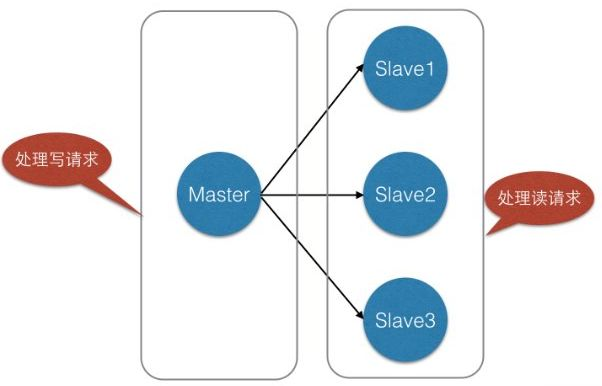
同样类似于数据库，当单表数据大于500W的时候需要对其进行分库分表，当数据量很大的时候（标准可能不一样，要看Redis服务器容量）我们同样可以对Redis进行类似的操作，就是分库分表。
假设，我们有一个社交网站，需要使用Redis存储图片资源，存储的格式为键值对，key值为图片名称，value为该图片所在文件服务器的路径，我们需要根据文件名查找该文件所在文件服务器上的路径，数据量大概有2000W左右，按照我们约定的规则进行分库，规则就是随机分配，我们可以部署8台缓存服务器，每台服务器大概含有500W条数据，并且进行主从复制，示意图如下
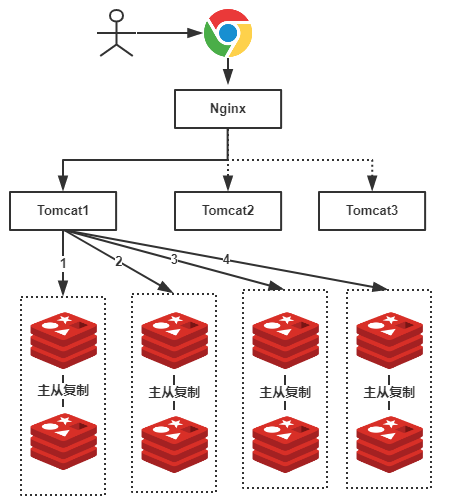
由于规则是随机的，所有我们的一条数据都有可能存储在任何一组Redis中，例如上图我们用户查找一张名称为”a.png”的图片，由于规则是随机的，我们不确定具体是在哪一个Redis服务器上的，因此我们需要进行1、2、3、4，4次查询才能够查询到（也就是遍历了所有的Redis服务器），这显然不是我们想要的结果，有了解过的小伙伴可能会想到，随机的规则不行，可以使用类似于数据库中的分库分表规则：按照Hash值、取模、按照类别、按照某一个字段值等等常见的规则就可以出来了！好，按照我们的主题，我们就使用Hash的方式。
为Redis集群使用Hash
可想而知，如果我们使用Hash的方式，每一张图片在进行分库的时候都可以定位到特定的服务器，示意图如下：
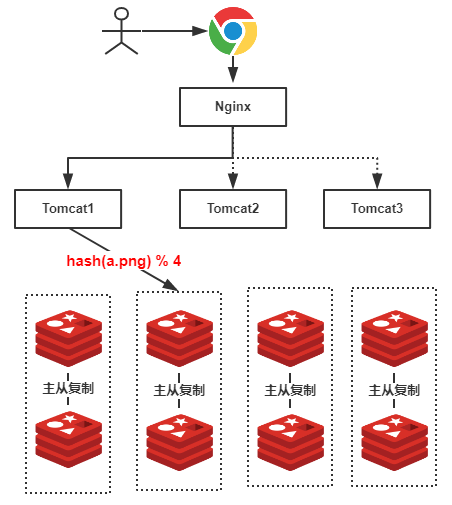
上图中，假设我们查找的是”a.png”，由于有4台服务器（排除从库），因此公式为hash(a.png) % 4 = 2 ，可知定位到了第2号服务器，这样的话就不会遍历所有的服务器，大大提升了性能！
使用Hash的问题
上述的方式虽然提升了性能，我们不再需要对整个Redis服务器进行遍历！但是，使用上述Hash算法进行缓存时，会出现一些缺陷，主要体现在服务器数量变动的时候，所有缓存的位置都要发生改变！
试想一下，如果4台缓存服务器已经不能满足我们的缓存需求，那么我们应该怎么做呢？很简单，多增加几台缓存服务器不就行了！假设：我们增加了一台缓存服务器，那么缓存服务器的数量就由4台变成了5台。那么原本hash(a.png) % 4 = 2 的公式就变成了 hash(a.png) % 5 =？ 。假设有20个数据需要存储，在有4个redis节点的时候如下图：
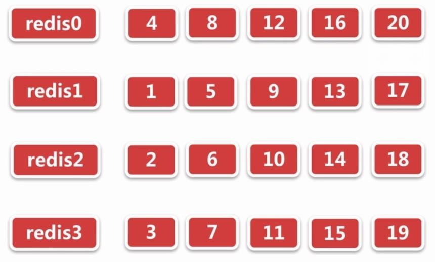
当我们添加1个redis节点之后，数据的分布如下图所示：
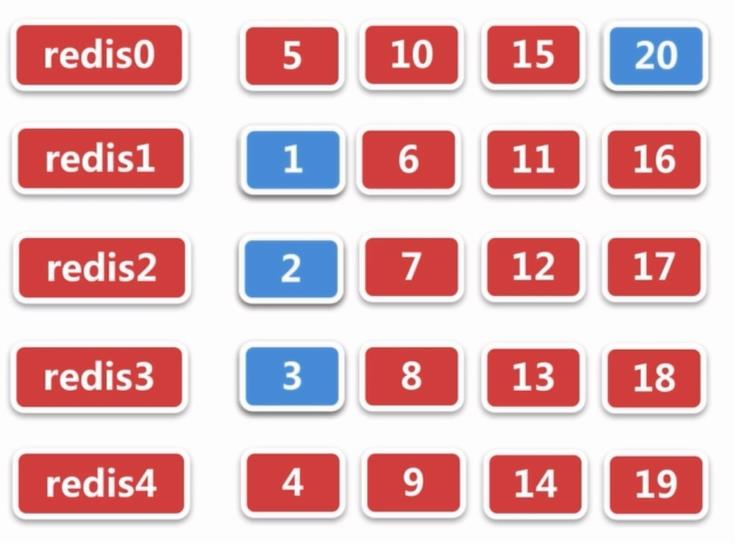
图中蓝色部分代表与4个节点时存储位置一致的数据，其命中率为：4/20=20%。也就是说这种情况带来的结果就是当服务器数量变动时，很多缓存的位置都要发生改变！换句话说，当服务器数量发生改变时，所有缓存在一定时间内是失效的，当应用无法从缓存中获取数据时，则会向后端数据库请求数据（还记得上一篇的《缓存雪崩》吗？）！
同样的，假设4台缓存中突然有一台缓存服务器出现了故障，无法进行缓存，那么我们则需要将故障机器移除，但是如果移除了一台缓存服务器，那么缓存服务器数量从4台变为3台，也是会出现上述的问题！
所以，我们应该想办法不让这种情况发生，但是由于上述Hash算法本身的缘故，使用取模法进行缓存时，这种情况是无法避免的，为了解决这些问题，Hash一致性算法（一致性Hash算法）诞生了！
一致性hash算法的神秘面纱
一致性Hash算法也是使用取模的方法，只是，刚才描述的取模法是对服务器的数量进行取模，而一致性Hash算法是对2^ 32-1取模，什么意思呢简单来说，一致性Hash算法将整个Hash值控件组织成一个虚拟的圆环，如假设某哈希函数H的值空间为0-2^32-1取模（即哈希值是一个32位无符号整型），整个哈希环如下：
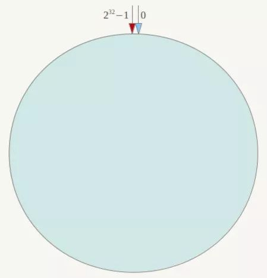
整个空间按顺时针方向组织，圆环的正上方的点代表0，0点右侧的第一个点代表1，以此类推，2、3、4、5、6……直到2^ 32-1，也就是说0点左侧的第一个点代表2^ 32-1， 0和2^ 32-1在零点中方向重合，我们把这个由2^32个点组成的圆环称为Hash环。
下一步将各个服务器使用Hash进行一个哈希，具体可以选择服务器的IP或主机名作为关键字进行哈希，这样每台机器就能确定其在哈希环上的位置，这里假设将上文中四台服务器使用IP地址哈希后在环空间的位置如下：
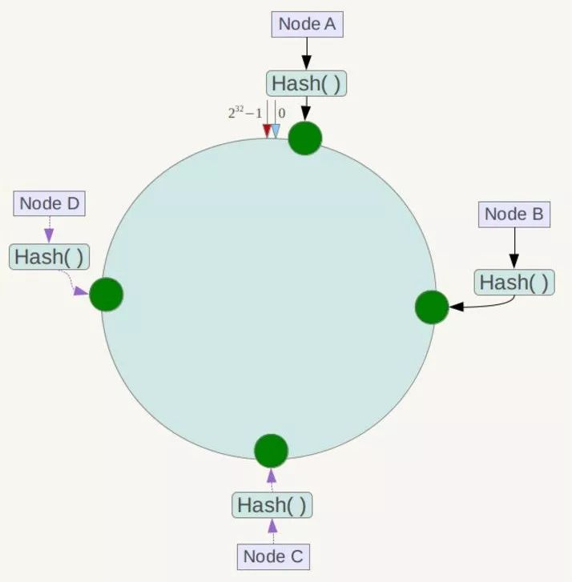
接下来使用如下算法定位数据访问到相应服务器：将数据key使用相同的函数Hash计算出哈希值，并确定此数据在环上的位置，从此位置沿环顺时针“行走”，第一台遇到的服务器就是其应该定位到的服务器！
例如我们有Object A、Object B、Object C、Object D四个数据对象，经过哈希计算后，在环空间上的位置如下：
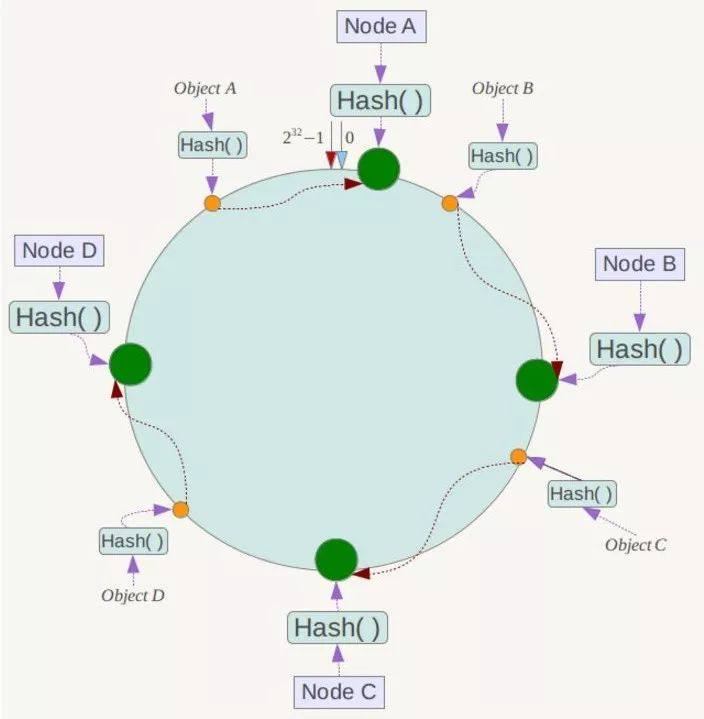
根据一致性Hash算法，数据A会被定为到Node A上，B被定为到Node B上，C被定为到Node C上，D被定为到Node D上。
一致性Hash算法的容错性和可扩展性
现假设Node C不幸宕机，可以看到此时对象A、B、D不会受到影响，只有C对象被重定位到Node D。一般的，在一致性Hash算法中，如果一台服务器不可用，则受影响的数据仅仅是此服务器到其环空间中前一台服务器（即沿着逆时针方向行走遇到的第一台服务器，如下图中NodeC与NodeB之间的数据，图中受影响的是ObjectC）之间数据，其它不会受到影响，如下所示：
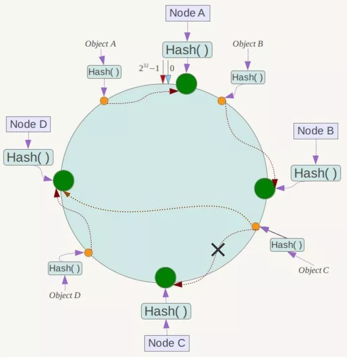
下面考虑另外一种情况，如果在系统中增加一台服务器Node X，如下图所示：
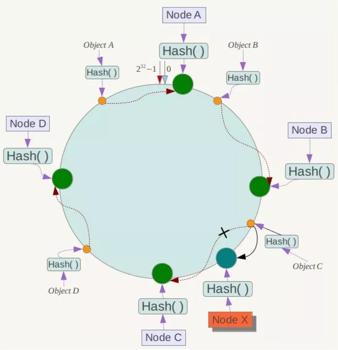
此时对象Object A、B、D不受影响，只有对象C需要重定位到新的Node X ！一般的，在一致性Hash算法中，如果增加一台服务器，则受影响的数据仅仅是新服务器到其环空间中前一台服务器（即沿着逆时针方向行走遇到的第一台服务器）之间数据，其它数据也不会受到影响。
综上所述，一致性Hash算法对于节点的增减都只需重定位环空间中的一小部分数据，具有较好的容错性和可扩展性。
Hash环的数据倾斜问题
一致性Hash算法在服务节点太少时，容易因为节点分部不均匀而造成数据倾斜（被缓存的对象大部分集中缓存在某一台服务器上）问题，例如系统中只有两台服务器，其环分布如下：
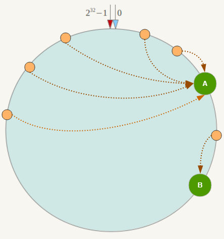
此时必然造成大量数据集中到Node A上，而只有极少量会定位到Node B上。为了解决这种数据倾斜问题，一致性Hash算法引入了虚拟节点机制，即对每一个服务节点计算多个哈希，每个计算结果位置都放置一个此服务节点，称为虚拟节点。具体做法可以在服务器IP或主机名的后面增加编号来实现。
例如上面的情况，可以为每台服务器计算三个虚拟节点，于是可以分别计算 “Node A#1”、“Node A#2”、“Node A#3”、“Node B#1”、“Node B#2”、“Node B#3”的哈希值，于是形成六个虚拟节点：
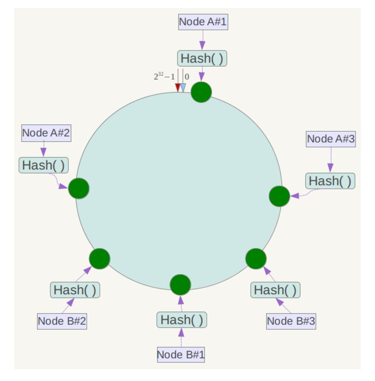
同时数据定位算法不变，只是多了一步虚拟节点到实际节点的映射，例如定位到“Node A#1”、“Node A#2”、“Node A#3”三个虚拟节点的数据均定位到Node A上。这样就解决了服务节点少时数据倾斜的问题。在实际应用中，通常将虚拟节点数设置为32甚至更大，因此即使很少的服务节点也能做到相对均匀的数据分布，通俗点的原理如下图所示：
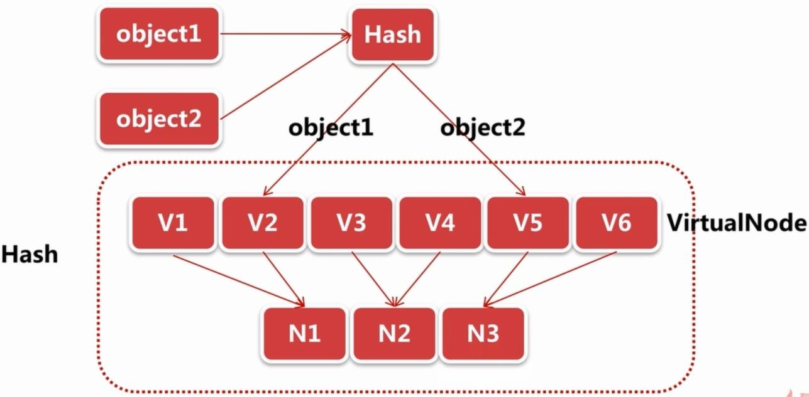
由于虚拟节点V1、V2映射到了真实节点N1，当数据object1确定到Hash环上的位置并找到虚拟节点V2的时候，其真实位置则是位于真实节点N1上。
结语
我们一步步分析了什么是一致性Hash算法，主要是考虑到分布式系统每个节点都有可能失效，并且新的节点很可能动态的增加进来的情况，如何保证当系统的节点数目发生变化的时候，我们的系统仍然能够对外提供良好的服务，这是值得考虑的！
ref:
https://blog.csdn.net/wlccomeon/article/details/86553831
https://blog.csdn.net/bntX2jSQfEHy7/article/details/79549368
https://blog.csdn.net/qq_35956041/article/details/81026972